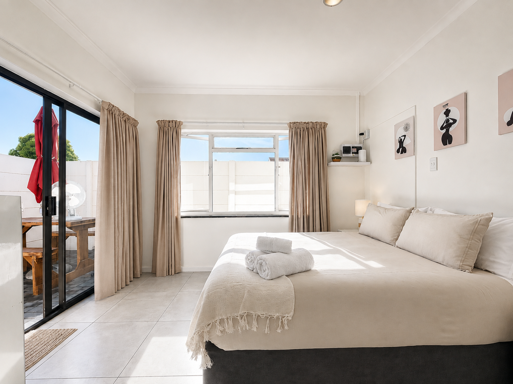
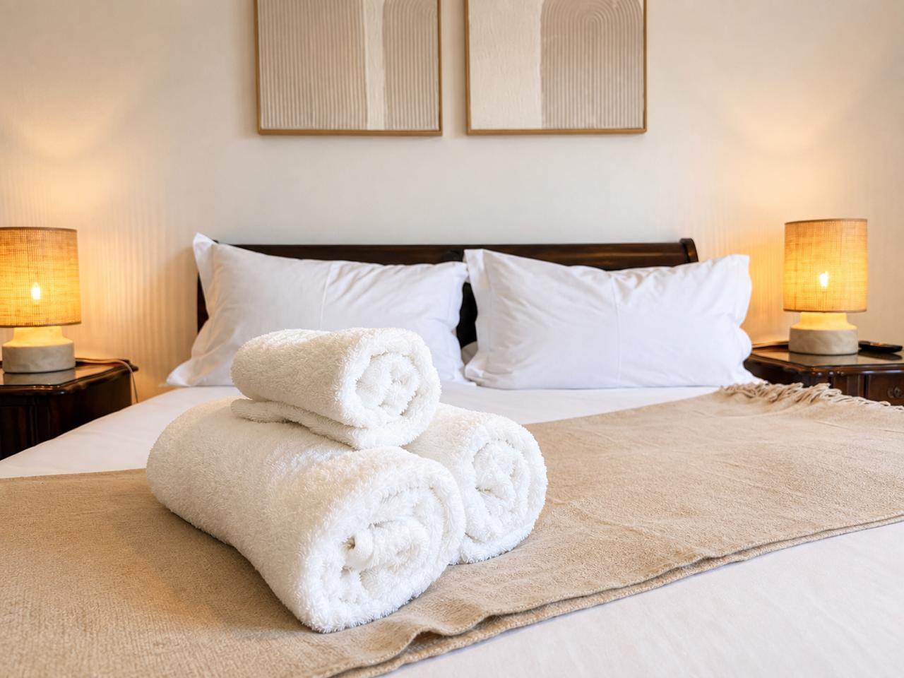
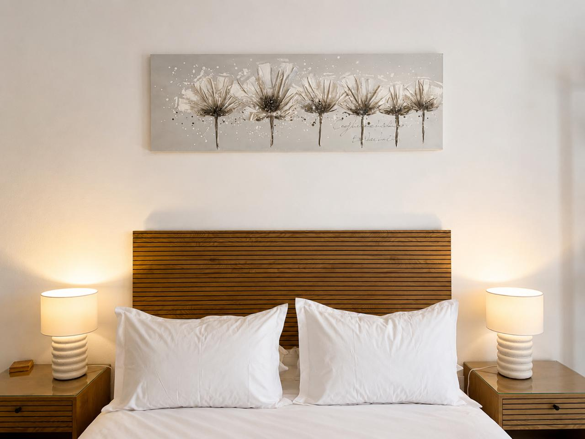
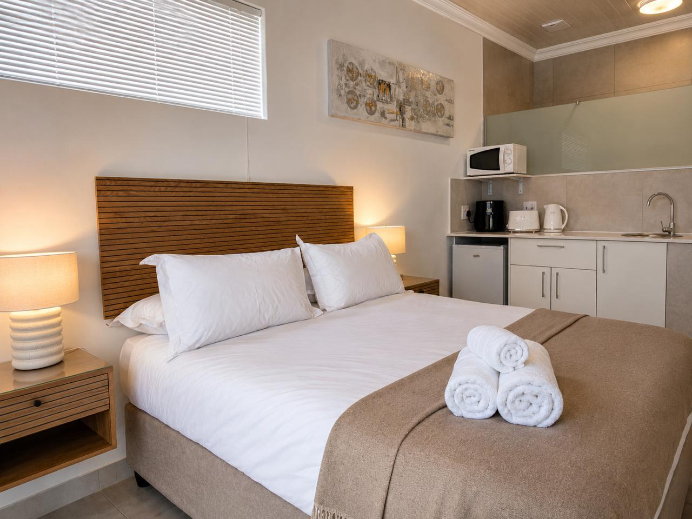

01 / PEARLPearl
Light & easyBright, calm and completely your own. A comfortable base for one or two, with everything you need for an easy self-catering stay.
Check availability ↗
YOUR LITTLE CORNER OF BLOUBERG
Salt on your skin. A slower kind of morning.
Four self-catering stays, just steps from the coast.
SETTLE INTO YOUR OWN SPACE
For early launches, unhurried days and everything in between. Pick your base, unpack your bags, and make yourself at home.

01 / PEARLBright, calm and completely your own. A comfortable base for one or two, with everything you need for an easy self-catering stay.
Check availability ↗
02 / CORALA private little retreat with warm tones, close to the communal braai area. Made for couples or two riders sharing an adventure.
Check availability ↗
03 / SWELLOur largest unit, with space for boards, bars and wetsuits to dry. A practical home base for kitesurfers travelling with gear.
Check availability ↗
04 / KELPTucked at the back of the property, with garden views and a little more quiet. A slower pace when you're off the water.
Check availability ↗FOLLOW THE SOUTH EASTER
At Seajax, you don't have to choose. Blouberg Beach and Kite Beach are a short walk away, with the Cape Doctor setting the rhythm of summer.
Check the forecast on Windguru ↗Conditions change. Always check the forecast before heading out.
A LOOK AROUND
A glimpse of the spaces you'll come back to after a day on the coast.
CLOSE TO THE WATER. CLOSE TO EVERYTHING.
31 Tritonia Road
Table View, Cape Town, 7441
Blouberg Beach / Kite Beach~5 min walk
Table View shops & restaurants~10 min drive
Cape Town city centre~25 min drive
Cape Town International Airport~35 min drive
Travel times are approximate.YOUR NEXT CHAPTER, BY THE SEA
Find your dates, choose your space, and make it a stay to remember.
View current rates and availability on your preferred booking platform.